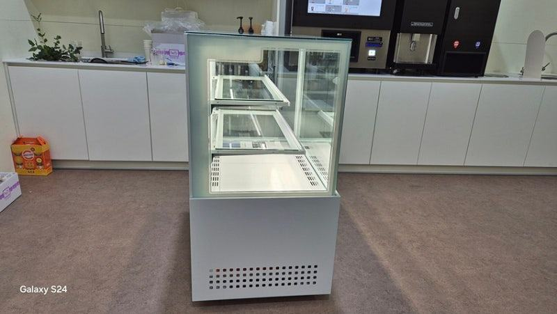
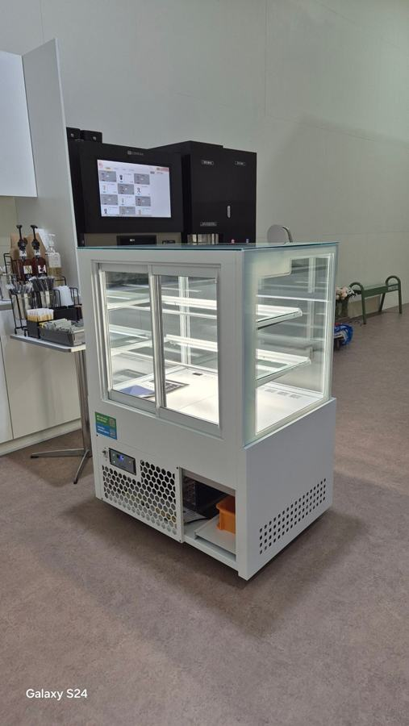
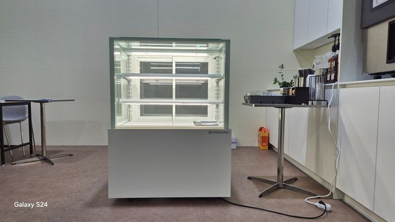
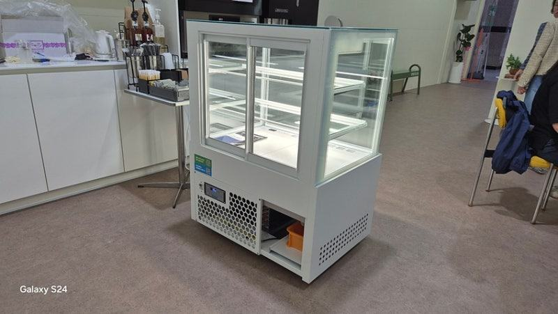
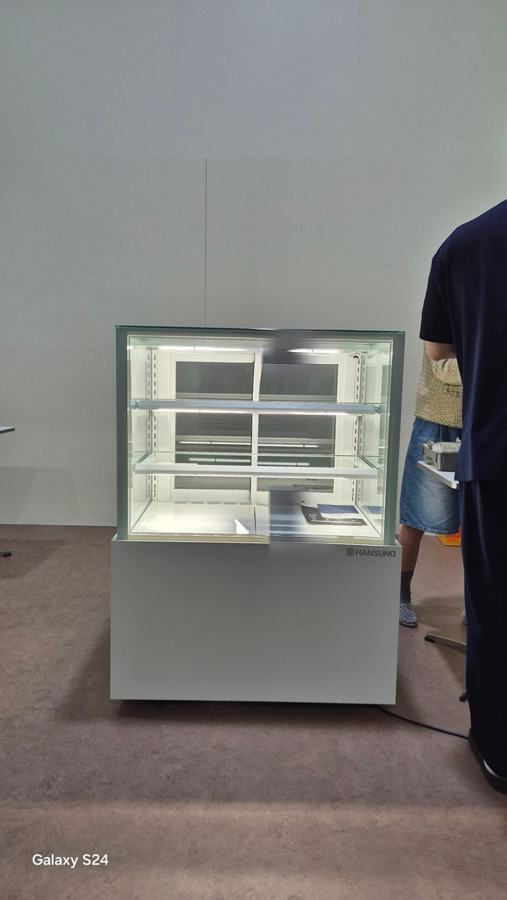
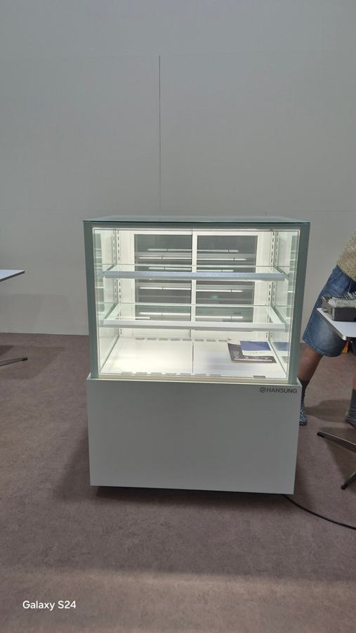
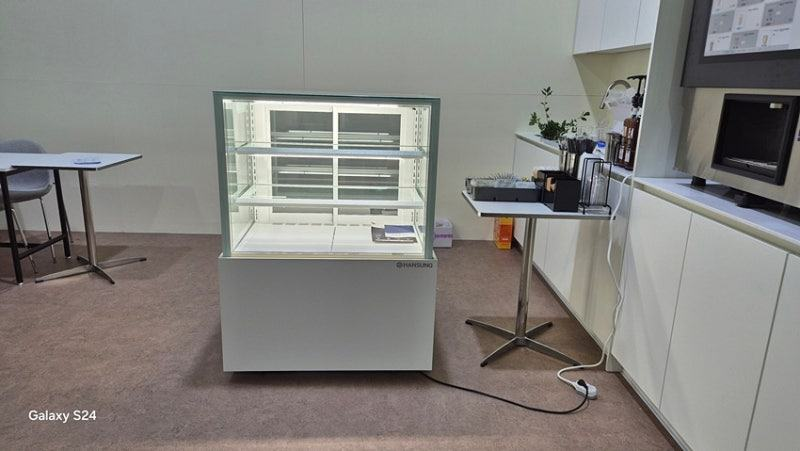
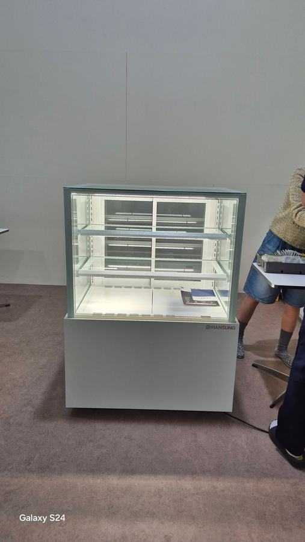

제과쇼케이스
카페쇼케이스 진열, 계산대 앞에서 손이 가는 순서

카페쇼케이스 진열은 손님이 주문을 기다리며 서는 자리에서 눈높이 칸에 대표 메뉴를, 아랫칸에 함께 사 갈 만한 소품 디저트를 두는 것이 기본입니다. 칸 높이와 쇼케이스 위치가 매장 동선과 맞아야 이 순서가 살아나므로, 진열은 쇼케이스 크기를 정할 때부터 함께 계획하시는 게 좋습니다.
안녕하세요. 카페와 베이커리 쇼케이스를 맞춤으로 만드는 한성쇼케이스입니다.
카페를 열고 몇 주 지나면 이런 고민을 하시는 사장님이 많습니다. "케이크는 잘 나가는데 쿠키나 병 음료는 손이 안 가요." 상품이 문제가 아니라 놓인 자리가 문제인 경우가 생각보다 많습니다.
카페 손님은 메뉴판을 보고 주문한 뒤 계산대 앞에서 잠깐 기다립니다. 그 짧은 시간에 쇼케이스 안을 훑어보며 하나 더 고를지 말지를 정하시죠.
오늘은 그 몇 초를 살리는 카페쇼케이스 진열 순서와, 진열이 잘 되도록 쇼케이스 자체를 어떻게 정하면 좋은지 이야기해 보겠습니다.
1. 눈높이 칸에는 사진 찍고 싶은 메뉴를
카페쇼케이스에서 가장 먼저 보이는 칸은 서 있는 손님의 눈높이와 가슴 높이 사이입니다. 이 칸에는 매장을 대표하는 홀케이크나 시그니처 디저트처럼 모양이 예쁘고 단가가 있는 메뉴를 두세요.
이 칸은 손님이 사진을 찍는 자리이기도 합니다. 상품 사이 간격을 조금 넉넉히 두고, 같은 메뉴를 일렬로 길게 늘어놓기보다 크기와 높이가 다른 메뉴를 섞어 두면 칸이 풍성하게 보입니다.
- 대표 메뉴는 정면 가운데에 두세요.
- 케이크 단면이 보이는 메뉴는 단면이 손님 쪽을 향하게 놓으세요.
- 가격표와 메뉴명은 같은 높이로 맞춰 정리해 보세요.
2. 아랫칸은 함께 사 가는 상품 자리
허리 아래 칸은 일부러 몸을 숙여야 보이는 자리라 대표 메뉴를 두면 아깝습니다. 대신 쿠키, 마들렌, 병 음료처럼 음료와 함께 하나 더 집어 가기 쉬운 상품을 모아 두면 객단가를 올리는 칸이 됩니다.
포장 상품은 라벨이 보이도록 앞을 향해 세우고, 같은 종류끼리 묶어 두면 손님이 고르기 쉽습니다. 테이크아웃 손님이 많은 매장이라면 계산대에서 가장 가까운 쪽 끝을 이 상품들로 채워 보세요.
계절 메뉴를 낼 때도 이 칸이 유용합니다. 새로 나온 디저트를 아랫칸 맨 앞에 소량 두고 반응을 본 뒤, 잘 나가면 눈높이 칸으로 올리는 식으로 운영하시면 진열 자리 자체가 메뉴 테스트 공간이 됩니다.


3. 진열을 망치는 흔한 실수
가장 흔한 실수는 칸을 꽉 채우는 것입니다. 빈틈 없이 쌓인 케이크는 손님 입장에서 고르기 어렵고, 냉기가 도는 길도 막혀 칸마다 온도 차이가 생기기 쉽습니다.
두 번째는 유리 앞쪽에 바짝 붙여 놓는 것입니다. 앞문 쪽 유리에 상품이 닿으면 결로가 생겨 손님 쪽에서 뿌옇게 보일 수 있습니다.
세 번째는 조명이 닿지 않는 안쪽 구석에 상품을 두는 것인데, 이런 자리는 진열보다 재고 보관용으로 남겨 두시는 편이 낫습니다.
- 칸마다 손바닥 하나 정도의 여유를 남겨 두세요.
- 유리와 상품 사이 간격을 띄워 두세요.
- 오후에 남은 상품은 앞쪽으로 당겨 정리하세요.
4. 진열은 쇼케이스 크기를 정할 때 시작됩니다
진열 순서를 아무리 잘 짜도 칸 높이가 케이크 높이와 맞지 않거나, 쇼케이스가 계산대에서 멀리 떨어져 있으면 효과가 반감됩니다.
그래서 진열 계획은 쇼케이스를 고르는 단계에서 함께 세우는 것이 좋습니다.
어떤 메뉴를 몇 가지 올릴지, 홀케이크와 조각 케이크 비율이 어떤지, 손님이 어디에 서서 주문하는지를 알려 주시면 칸 수와 내부 단차, 높이를 그에 맞춰 설계할 수 있습니다.
체크리스트
- 눈높이 칸에 둘 대표 메뉴
- 아랫칸에 모을 함께 사 갈 상품
- 칸별 여유 공간과 냉기 순환
- 유리와 상품 사이 간격
- 계산대와 쇼케이스의 거리
- 메뉴 높이에 맞는 내부 단차
현장에서 자주 보는 경우: 인테리어에 맞춰 놓을 자리부터 재는 카페
개인 카페와 감성 카페가 늘면서 쇼케이스까지 매장 인테리어와 통일감을 맞추려고 맞춤 제작을 의뢰하시는 사장님이 많아졌습니다.
기성품을 두면 매장 분위기와 어긋나 보인다는 이유에서입니다.
이런 경우 냉장고가 들어설 자리를 직접 실측해 인테리어에 녹아드는 크기와 모양을 함께 찾습니다. 놓일 자리가 정해지면 손님이 어디서 쇼케이스를 바라보는지도 정해지기 때문에, 진열 칸 구성까지 한 번에 맞출 수 있습니다.
설치 후에 고장이 나더라도 바로 사후 서비스를 받을 수 있도록 A/S도 함께 안내해 드리고 있습니다.





자주 묻는 질문
케이크 높이가 메뉴마다 다른데 칸 높이를 다르게 만들 수 있나요?
가능합니다. 진열할 메뉴의 높이를 알려 주시면 칸마다 내부 단차를 다르게 잡아 제작합니다.
진열 상품을 하루에 몇 번 바꾸는 게 좋을까요?
매장마다 다르지만 오전, 오후처럼 손님층이 바뀌는 시간에 맞춰 앞줄만 정리해 주셔도 충분합니다. 남은 상품을 앞으로 당기고 빈칸을 줄이는 것이 핵심입니다.
작은 1인 카페에도 맞춤 쇼케이스가 맞을까요?
공간이 좁을수록 자리에 꼭 맞는 크기가 중요합니다. 계산대 옆 자투리 폭을 재서 알려 주시면 그 자리에 맞춘 구성을 먼저 안내해 드립니다.
매장 조건에 맞춰 만드는 한성쇼케이스
원하시는 제품 사진과 설치할 공간 사진만 보내 주셔도 매장에 맞는 구성을 추천해 드립니다.
- 전국 240여 개 A/S 전담 센터 운영
- 본사 대량 자재 매입으로 품질 대비 합리적인 가격
- 유럽제·삼성 냉각 콤프레셔 적용
- 국내 최초 쇼케이스 전문 디자이너 상주
매장 폭과 원하는 진열 구성을 알려 주세요. 실측과 견적을 안내해 드립니다.
031-986-2458